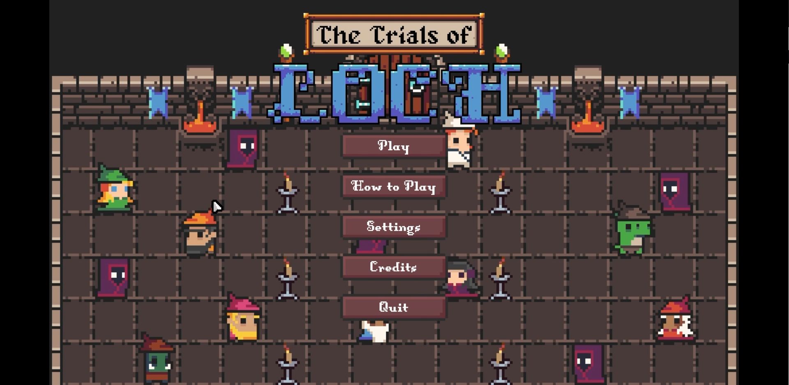

The Trials of Loch was developed in the MonoGame framework during my Problem Solving with Data Structures and Algorithms for Games course at RIT. I designed and implemented the projectile system, including trajectory calculations, firing logic, collision detection, and enemy-specific projectile behaviors. The careful implementation of math in this work provided consistent projectile motion and predictable gameplay interactions. Beyond gameplay mechanics, I developed the project's main menu and pause system, tying UI navigation into the game's internal state machine and ensuring smooth transitions between the different states of gameplay and UI. The project deepened my understanding of MonoGame's architecture and further developed my ability to implement algorithm-driven gameplay features.
Click to watch the Trailer
